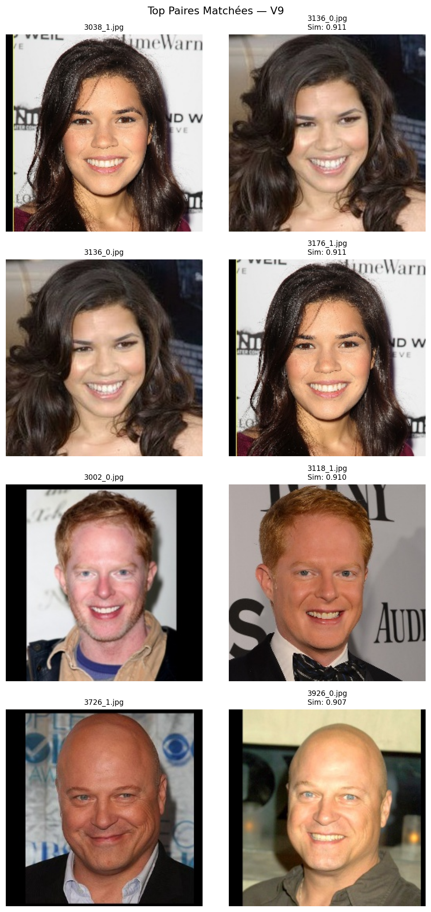
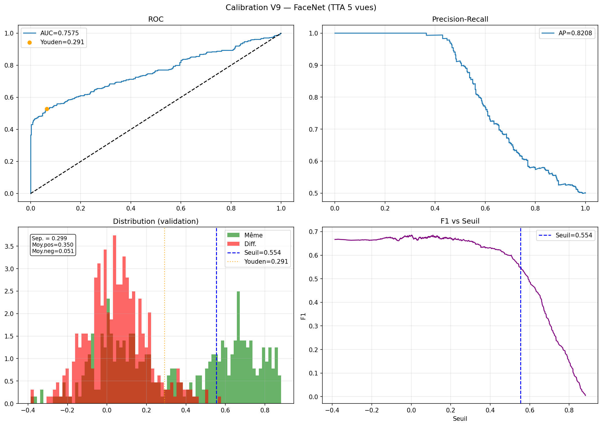
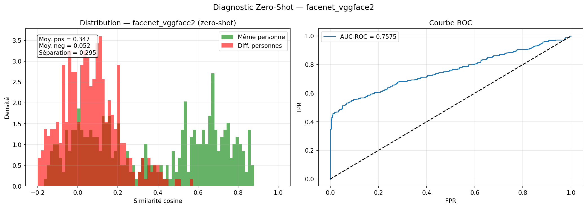

Reconnaissance faciale sur environ 2 millions de paires.
Tache 1 : verifier si deux photos representent la meme personne. Le projet documente les iterations V2 a V10, du reseau siamois MobileNetV2 jusqu'a FaceNet, TTA, alignement MTCNN et calibration du seuil.

Le vrai probleme n'etait pas seulement le modele.
La validation etait equilibree a 50% positif, alors que le test reel etait proche de 0.05%. Un seuil naif donnait beaucoup trop de faux matchs. La V9 corrige ce decalage avec une calibration basee sur le prior attendu.
Iterations principales
Siamese MobileNetV2
Premiere architecture de verification faciale avec TensorFlow.
Fine-tuning
Degelage partiel du backbone et ajustement des couches finales.
Triplet loss
Meilleure separation des embeddings pour rapprocher les memes identites.
FaceNet VGGFace2
Passage a un modele specialise visage avec embeddings 512 dimensions.
ArcFace + TTA
Ensemble et test-time augmentation, mais seuil encore trop permissif.
Correction du prior
Calibration du seuil pour tenir compte du tres fort desequilibre du test.
MTCNN + FAR
Exploration de l'alignement facial et d'une calibration orientee biometrie.
Visualisations

